AI: Search Methods for Problem Solving — Quiz 2 · 2025 · Term 1
24 questions · 24 marks · IIT Madras BS Data Science · course code CS3003
Comprehension · Q1–Q7
DATAShared data for Q1–Q7

SAQ11 mark
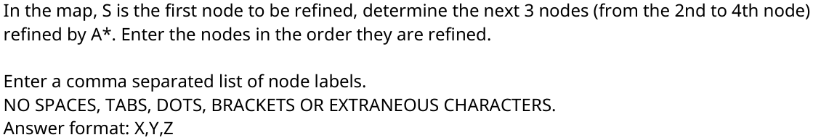
Answer: E,F,D (also accepted: F,E,D)
SAQ21 mark
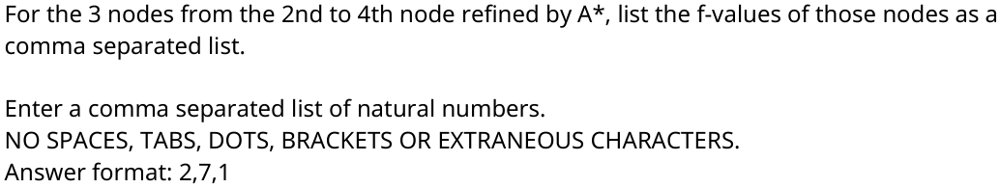
Answer: 12,12,13
SAQ31 mark
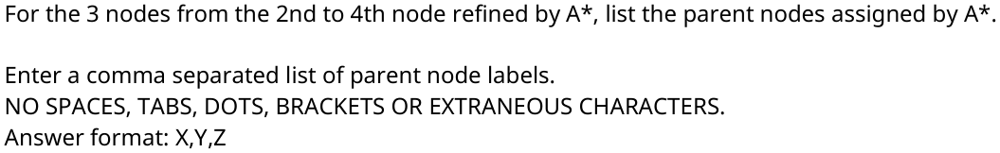
Answer: S,S,F
SAQ41 mark
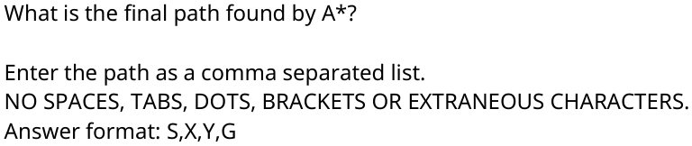
Answer: S,F,D,B,G
SAQ51 mark
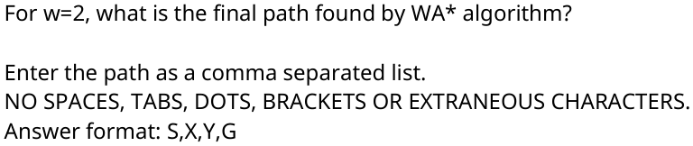
Answer: S,E,B,G
SAQ61 mark
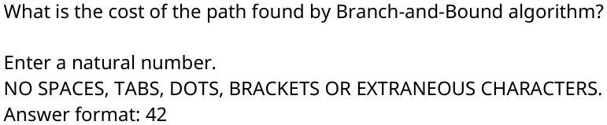
Answer: 10
MCQQ71 mark
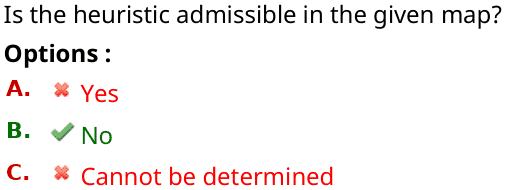
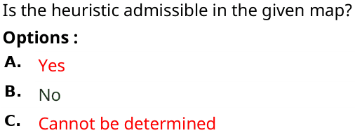
Answer: B
Comprehension · Q8–Q12
DATAShared data for Q8–Q12

SAQ81 mark
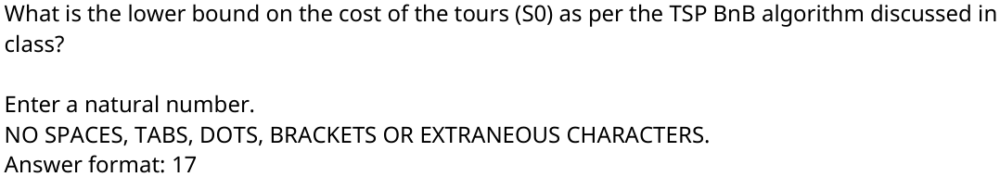
Answer: 182
SAQ91 mark
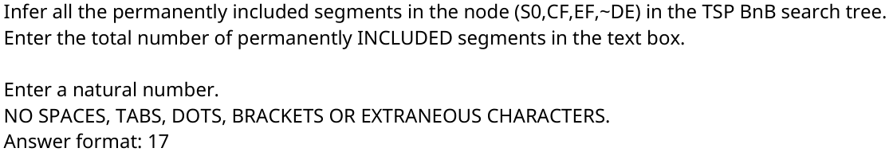
Answer: 2
SAQ101 mark
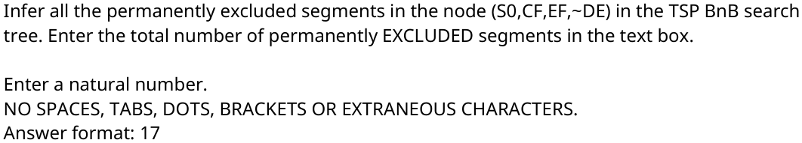
Answer: 5
SAQ111 mark
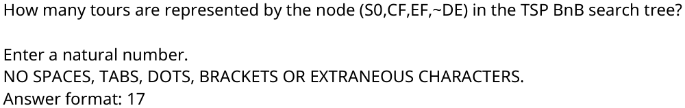
Answer: 4
SAQ121 mark
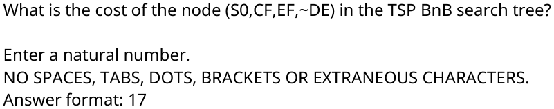
Answer: 208
Comprehension · Q13–Q14
DATAShared data for Q13–Q14

SAQ131 mark
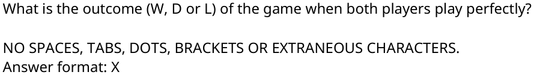
Answer: W
SAQ141 mark
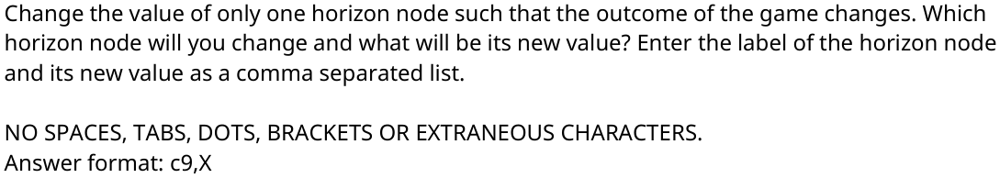
Answer: e5,D (also accepted: e6,D; e5,L; e6,L)
Comprehension · Q15–Q18
DATAShared data for Q15–Q18
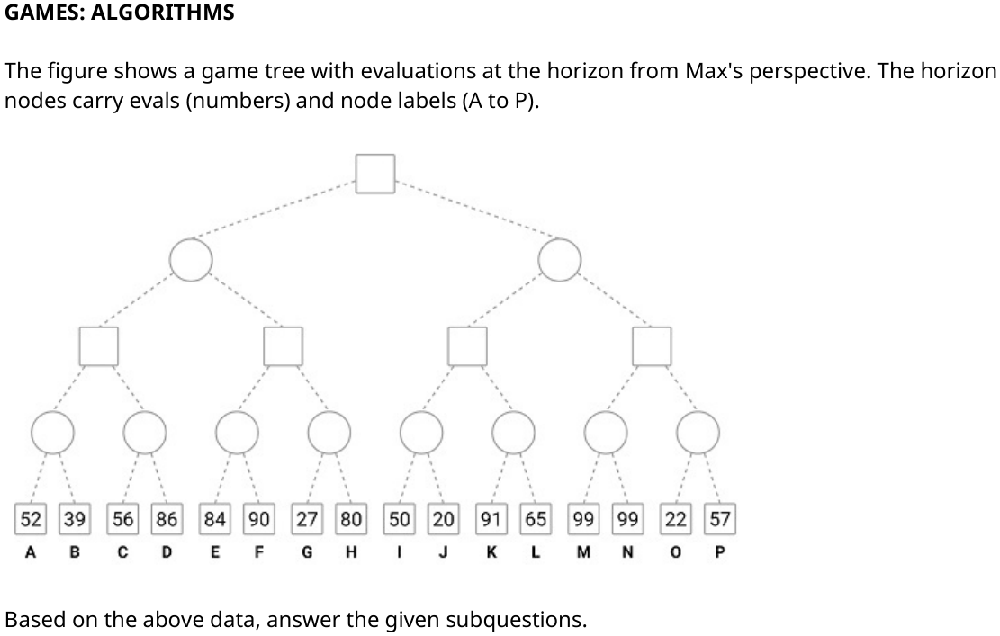
SAQ151 mark
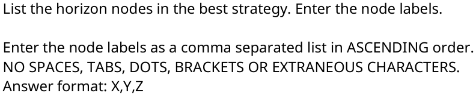
Answer: K,L,M,N
SAQ161 mark
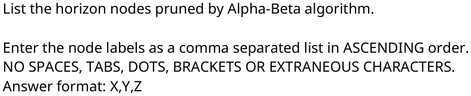
Answer: G,H,J,O,P
SAQ171 mark
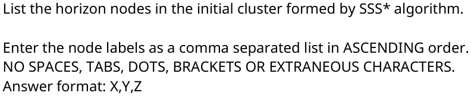
Answer: A,C,I,K
SAQ181 mark
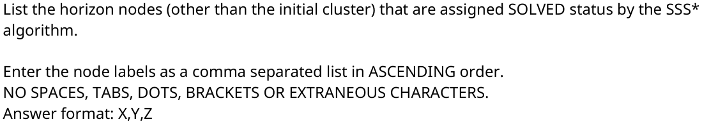
Answer: L,M,N
Comprehension · Q19–Q24
DATAShared data for Q19–Q24
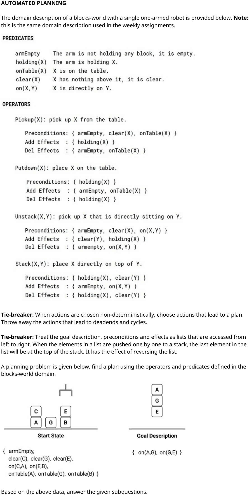
SAQ191 mark
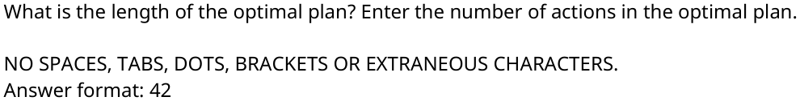
Answer: 6
MSQQ201 mark
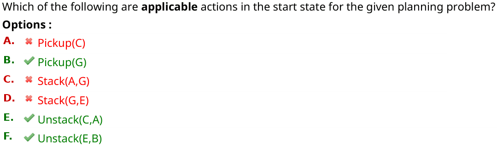
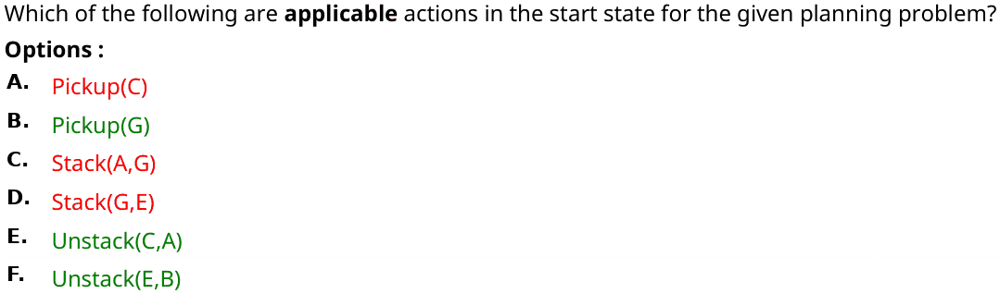
Answer: B, E, F
MSQQ211 mark
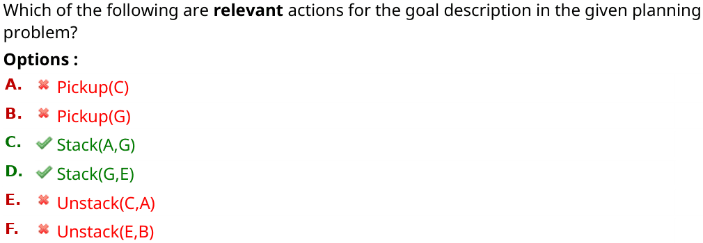
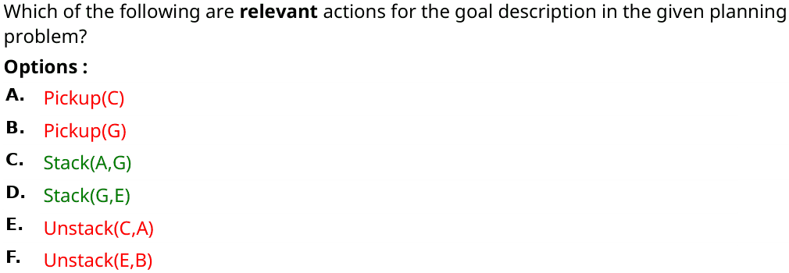
Answer: C, D
MCQQ221 mark
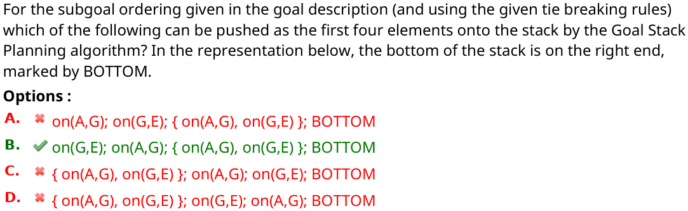
Answer: B
MCQQ231 mark
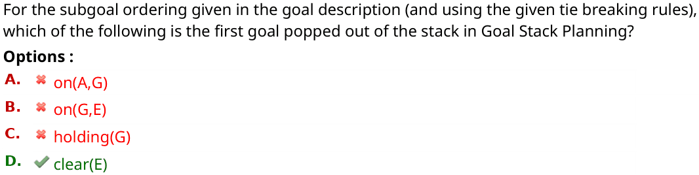
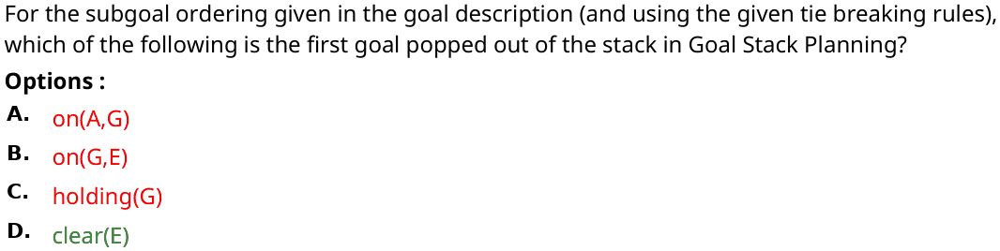
Answer: D
MCQQ241 mark
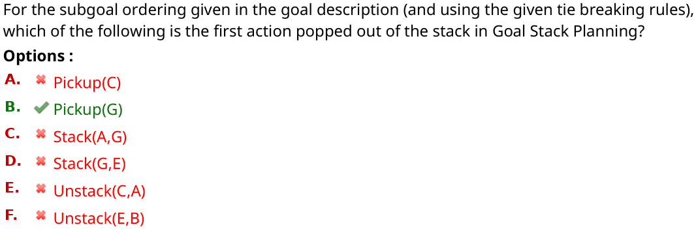
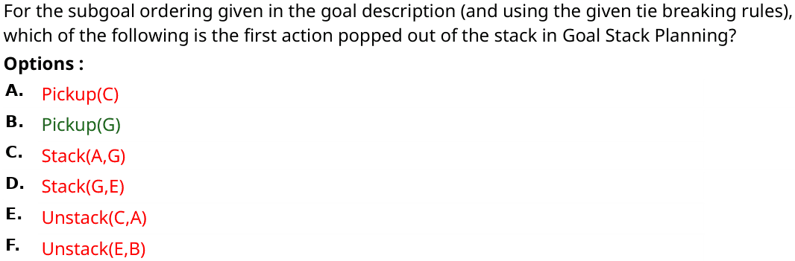
Answer: B
Questions are cropped directly from the original exam PDF, so equations, figures and the official answer marks are exactly as published.